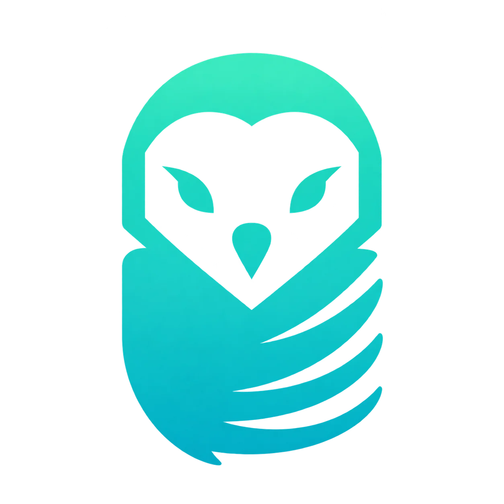
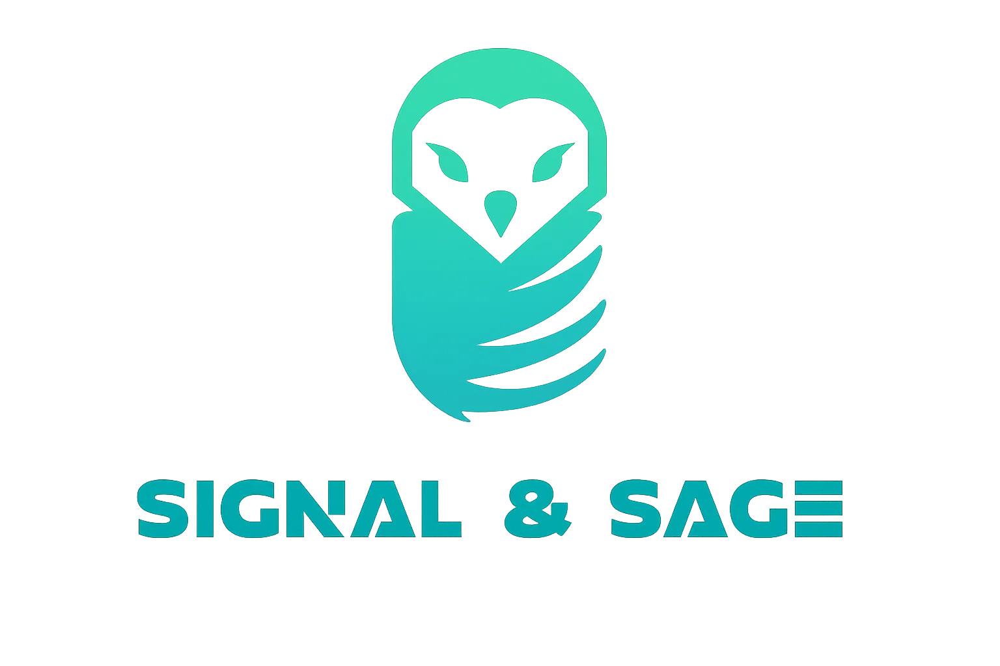

Discover
Listen first. Understand your people, market, and the friction holding you back.

Signal & SageClarity for the next chapter.
Strategy, technology, and education for businesses
with the heart to grow.
Munich, 2021. Three students saw a city reopening — and independent businesses struggling to find their footing. A capstone project on economic resurgence became something more personal.
We walked into shops, listened to owners, and worked alongside them. What began as practical help grew into Signal & Sage: a partner for the businesses too often overlooked.
Signal means clarity and direction. Sage means wisdom that lasts. Together, they shape everything we do.
“We watched businesses we loved struggle not because they lacked heart — but because no one had shown them the way forward.”
Every business is different. Our process creates clarity at each step — and leaves your team stronger than we found it.
Listen first. Understand your people, market, and the friction holding you back.
Separate symptoms from causes. Find the gaps that matter most.
Shape a strategy around your reality, ambitions, and resources.
Build and activate together. Turn the plan into daily practice.
Teach, adapt, and grow the capability to keep moving forward.
From the first strategic question to the last line of code, we connect the thinking with the doing.
Identify what is outdated, misaligned, or inefficient. Build a practical plan for renewed momentum.
IDEAL FORBusinesses at inflection points
Reach new audiences, strengthen acquisition, and create relationships that bring customers back.
IDEAL FORRetail, hospitality, and service businesses
Thoughtful, high-performance websites that make your business easier to discover and trust.
IDEAL FORNew businesses, rebrands, and outdated sites
Connect your customer information, simplify processes, and give your team a clearer view of the work.
IDEAL FORGrowing teams and complex pipelines
Tools designed around the way you work — from automation to platforms that solve a specific problem.
IDEAL FORUnique workflows and specialized industries
Practical workshops that bring generations together and turn unfamiliar ideas into useful skills.
IDEAL FOROwners, teams, and entrepreneurial communities
Playful programs that introduce systems thinking, creativity, and problem-solving to young learners. Designed with technical imagination and educational care.
IDEAL FORSchools, community organizations, and foundations
Illustrative engagements from the supplied brief. Outcomes shown below are examples, pending verification.
A digital identity, reservation workflow, and customer strategy for a third-generation restaurant in Maxvorstadt.
A digital storefront, CRM, and family workshop series for a specialty shop built over four decades.
A five-week program bringing experienced business owners and young founders together.
Client management, scheduling, communication, and invoicing connected in one purpose-built platform.
Business understanding. Technical imagination. Educational care. A small team, working closely with yours.
Loading team profiles…
Good guidance should be within reach. We believe progress starts when people have the tools, understanding, and confidence to act.

“The most powerful thing we can give a business is the confidence to believe that a different future is possible.”Start the conversation
Tell us where you are, what is getting in the way, and where you would like to go.
hello@signalandsage.comMunich, Germany · Est. 2021
Introduce your business, share the challenge you are facing, and tell us what progress would look like for you.
Email Signal & Sage